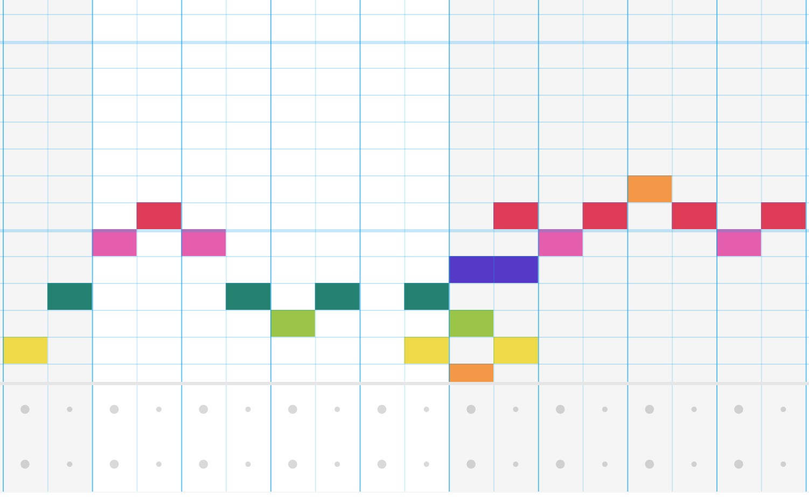
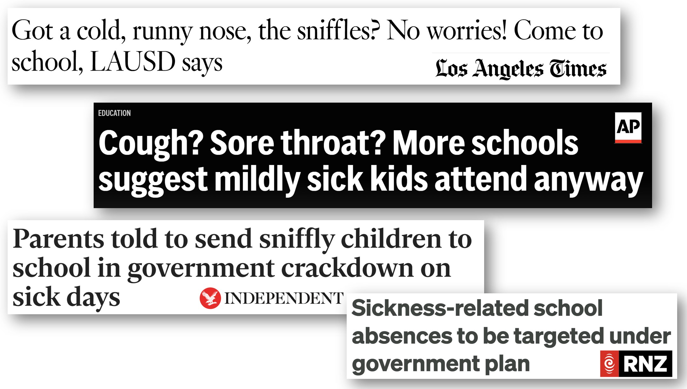
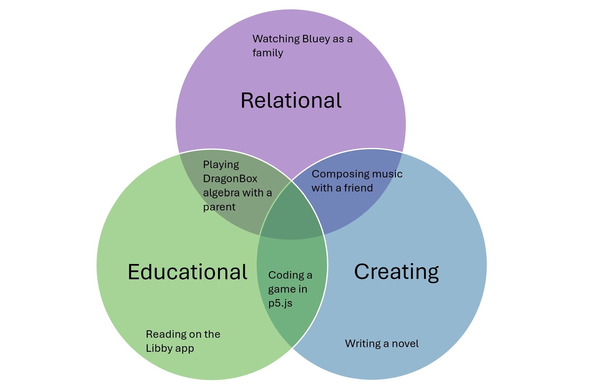
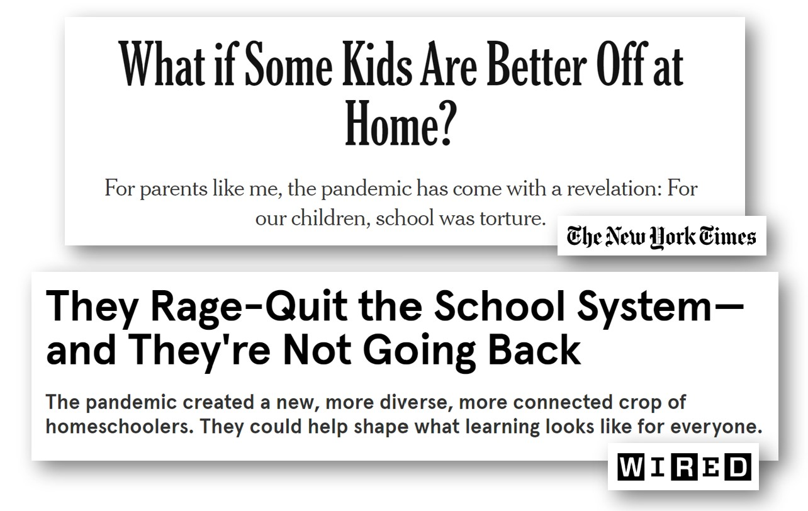

My daughter is constantly creating– her passions include making art, writing fiction, coding interactive games, and composing music. Yet, I regularly see news articles and media pundits suggesting that my husband and I are doing things all wrong. The reason for these claims? My daughter uses screen-based tools, at least partially, and in some cases, entirely, to pursue the interests I listed in my first sentence. To give more detail on how she pursues her passions:
- Art: She creates digital art in Sketchbook Pro, both on her own and in lessons. She also takes in-person art courses that involve a mix of acrylic painting, water colors, and sculpture.
- Coding: She loves coding in Scratch and P5.js to design and build interactive games.
- Creative writing: While her handwriting is on target for her age, she prefers typing, as it lets her write faster and express more complex ideas– we taught her touch typing when she was 5. She writes fiction both individually and collaboratively with friends.
- Music: She plays the piano, takes group singing lessons online, and enjoys composing music. There is a composition component to her piano lessons (which happen over zoom) and she composes music online through Chrome MusicLab and Flat.io.
My daughter is not unique. Our family knows many other children with similar creativity levels who are excelling in their passions beyond what is often believed possible for their age groups.

Parenting approaches are personal and often polarizing, so I normally don’t write on this topic. However, I am concerned by how several (in my view, false) points are being increasingly repeated by politicians and pundits: that screentime is very harmful for children, that it is essential for children’s well-being to attend in-person school every day (even when sick), and that it is important for workers to return to the office (even when their jobs can be done remotely).

The above points are interlocking, since getting workers commuting to in-person offices requires children being at in-person school. And overemphasizing in-person school attendance overlooks a number of children whose needs aren’t being met by in-person school. It also overlooks a number of online and screen-based options opportunities to build skills, express creativity, and form friendships. Here I want to focus on some innovative ways that we can encourage children’s flourishing, whether that is as a supplement to in-person school, or instead of.
A False Binary
I often hear statements such as, “I’d rather kids played outside than on a computer.” But these choices aren’t binary! You don’t have to pick just one. My daughter plays outside AND on a computer. She plays in-person sports regularly AND has online hobbies. This year we threw her 2 birthday parties: an in-person one for her local friends AND an online one for her long-distance friends.
The term “screen time” is so broad as to be meaningless, clumping together many disparate activities. A child sitting next to a parent playing a math game together on the computer is screen time. Calling your grandparents on skype is screen time. Collaboratively composing music with your best friend in another country is screen time. Yet, when many people refer to screen time, they often seem to be referring to a child passively watching TV on their own (something which my husband and I almost never let our daughter do, and that she doesn’t seem interested in). With any screen-based activity, it is useful to consider:
- Is it social or solitary?
- Does it involve creating content or consuming content?
- Is it educational or not?

It is not that some of these options are always good or always bad, but rather that we need to have a nuanced view on different combinations of these factors and how much time you may want to spend on each.
Screens are a crucial tool and outlet for her expressing her creativity, and it saddens me to hear an increasing media narrative vilifying screen time for kids.
Two of my daughter’s best friends are kids she has never met in person (because they live in a different state and in a different country), yet she talks with each of them several times per week. She also has local friends that we get together with regularly in-person. The fact that she has several close long-distance friends isn’t surprising, because my husband and I have many close online / long-distance friendships as well. Our friendships aren’t any less real because they are over screens. Opening up the possibility for long-distance friendships has given us the option of finding additional friends we are particularly compatible with.
Increased options
Screen-based learning options make homeschooling more feasible for a wider range of families. Online resources (games, classes, and clubs) can offer opportunities that may not be available locally, can fill in gaps parents may not be qualified to cover, and offer an exciting variety of options. For instance, online courses have allowed my daughter to do the following (which are not available locally for us):
- have tutors/teachers based in 5 different countries, providing diverse experiences
- take science courses including: particle physics for kids, biochem for kids (she has been with the same group of kids for 3 years), and a biology class where a small group of students could share images from their digital microscopes over zoom
- participate in clubs for creating collaborative narratives, fanart, and fanfiction around two of her favorite series of books
- complete mastery-based math games at her own pace, which allowed her and a few friends to end up many years above their grade levels
As I wrote about in a previous post, we homeschool, and this leaves our daughter with far more time for hobbies and socializing than in-person school gave us.
In-person school does not work for everyone
There are several categories of kids whose needs are often not met in traditional schools and frequently benefit from online options:
- Neurodivergent kids, who may deal with overstimulating, distracting, or painful sensory experiences in traditional schools
- Gifted kids, who are not intellectually challenged in traditional schools
- Kids from marginalized cultures, whose cultural heritage may not be reflected at school, or who may experience discrimination
- Kids who are being bullied
- Kids who have particular passions they would like to hyper-focus on (which are either not included in their school’s curriculum, or which they don’t get adequate time for)
- Medically complex kids, including those who may be getting sick so often that they can’t attend school regularly, those for whom an illness could result in hospitalization, or whose health issues make it difficult to attend school in-person
It is an injustice that schools are not inclusive of all children. While individuals pulling their children out of school does not address this injustice (and we should continue to work for safer and more inclusive schools), many families have found it necessary to leave systems that are harming their kids.

Don’t judge screentime by a few bad examples
I would caution against writing off screen time or online learning based on a low quality or poorly designed experience. Maybe your child’s school went online in 2020 with no notice and no support, and they were stuck in a zoom with 25 other kids (this is not a good set-up for anyone!). We have found that with small group online tutoring, my daughter is able to be more social and talkative than she was in a large class at in-person school, and she masters more material in less time. However, even amongst small online groups, occasionally she’ll try a teacher or club that isn’t a good match for her, and in those cases, we discontinue it.
Since screentime is often equated with a way to occupy kids while parents do something else, there are often unrealistic expectations, particularly for the most rewarding screen-based tools (which tend to involve a learning curve and require support from a trusted adult). In many cases handing your child a new educational app and then leaving them alone can lead to frustration. Sitting with them and working through the app together can be relationship-building, prevent them from getting overly discouraged, and help them build confidence as you figure it out together. With age and experience, kids will likely be able to do more on their own.
Inclusion and accessibility
Countries around the world, including the USA, UK, Australia, New Zealand, Japan, Belgium, and Canada are seeing high levels of school absences. Factors for these record levels of absences include more frequent illnesses (such as covid, RSV, and flu) and chronic health issues. In mid-2024, many countries (including the USA and Australia) experienced a particularly high wave of the ongoing covid pandemic. Rates of disability are increasing, and people, including children, are continuing to develop new health conditions after viral infections.
A number of school districts are responding to these waves of illness by placing heightened emphasis on attendance to in-person school, in many cases pressuring or even requiring children and teachers to attend school while sick. In parts of the UK, USA, and New Zealand, policies are being considered (or implemented) to charge parents fines if their children miss school too often. This is counterproductive, as it is hard to focus when unwell, attending school sick increases the likelihood of spreading illness to others, and rest is a key way to reduce risk of post-viral illness. None of these punitive attendance policies address root causes, such as improving school air quality, making sure parents have adequate paid leave to stay home with sick children, or decoupling school funding from attendance.
We are also seeing rising rates of disability amongst working age adults. In the USA, there has been an increase in people with cognitive disabilities. A BBC article notes that in the UK sick people are leaving the workforce at record highs. Online access is a crucial part of accessibility and disability rights. For many disabled people, accessibility improved in 2020 with more remote options for work, medical appointments, conferences, and other events, and there is now a counter-reaction in which these options are being removed.
Every child is different, so what works for my family won’t work for everyone. I am not recommending that all families homeschool, or that nobody should attend in-person school. However, we need to consider innovative approaches to learning and communication, and that includes screen-based approaches.
Hopes for a creative and inclusive society
I want children to discover and develop passions that they enjoy (astronomy, writing, art, music, math, oceanography, chess, there are so many possibilities!) and to be able to connect with others who share their interests. Taking advantage of computer-based and online options opens up a world of possibility. I also want a society in which disabled people are included in events and opportunities, and in which people can rest when they’re sick or preferably avoid illness in the first place. Fewer people commuting to the office is better for the environment. Traditional school is failing a lot of kids. I hope we can consider a range of innovative educational and social approaches, and not exclude an entire category of valuable ways to communicate, create, and learn (e.g. screentime).
I look forward to reading your responses. Create a free GitHub account to comment below.